聊聊从逻辑门到操作系统的计算机
远洋号 2018-07-02 08:00:00
前言
现代计算机已经发展的非常复杂，要理解计算机的运行原理都已经变得异常艰难，虽说我们无法亲自去制造他，但我们可以了解下计算机系统是怎么从0发展而来的。
逻辑门
逻辑门是计算机的基础元件，通过它可以完成逻辑运算（也称布尔运算），这类运算输入输出都只有0和1。
与门
执行“与”操作，两个输入一个输出，只有当两个输入都为1时输出才为1，其它情况都为0。
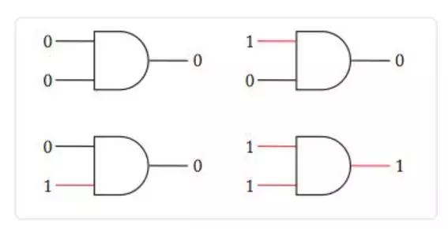
或门
执行“或”操作，两个输入一个输出，只要两个输入其中一个为1输出就为1。
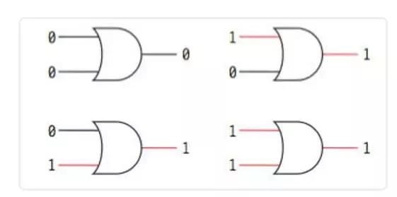
非门
执行“非”操作，一个输入一个输出，取输入信号的对立信号。
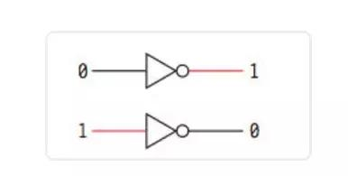
通过以上三种基本的逻辑门就能实现所有逻辑运算，计算机的本质就是由这三种基本门实现，通过成千上万个逻辑门实现计算。
加法
加法是所有一切运算的基础，我们看怎么通过前面说到的逻辑门实现加法运算。计算机与人类的计算方式不同，人类常用十进制，而计算机擅长用二进制，计算机计算时以二进制进行。
异或门(XOR)由三种最基础的门组合得到，异或门结构如下。
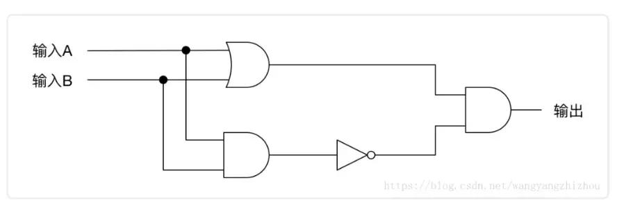
简记为，
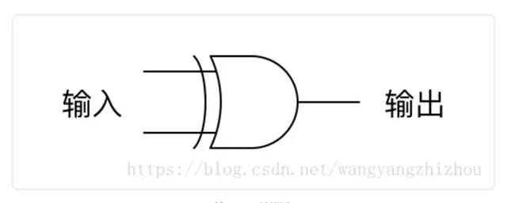
组合成半加器，如下，

记为，
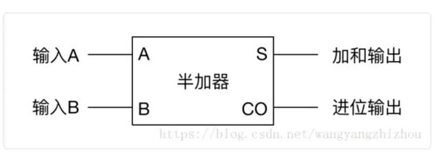
半加器只能处理两个二进制一位数的相加，并且不能处理前面计算的进位。为了处理进位，可以将两个半加器和一个或门连接，组成全加器，如下，
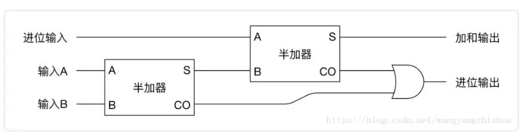
全加器只能处理三个二进制一位数（其中一位是进位输入）的相加。如果要实现n位二进制数据的相加，就需要使用n个全加器连接起来。
之所以说加法是一切运算的基础，是因为数学家已经证明了能通过加法能实现其它运算，比如乘法、除法、平方、开方、对数等等。
机器指令
虽说有了逻辑运算已经能帮助人类完成计算了，但是人类直接这样使用是非常不友好而且低效的，比如要做(11+22+33)+(44+55)操作时，我们需要分别先输入三个数并相加，然后自己手动记录下中间结果，类似地需要将另外一个中间结果记录下来，然后再一次输入两个数执行加法运算。
为了让上述过程能自动化，人类搞来了内存，它可以用来存放数据，可以把内存看成很多块，每块都对应有一个地址，通过地址可以对数据进行存储、读取和修改。这里把相关数据都已放到内存中。
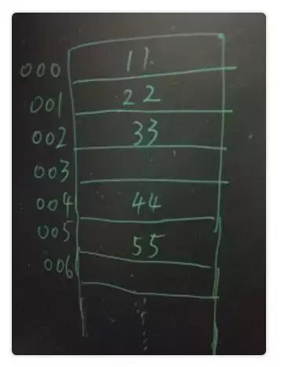
- 读取000地址的数到加法器
- 把001地址的数加到加法器
- 把002地址的数加到加法器
- 把加法器的数保存到003地址指向位置
- 读取004地址的数到加法器
- 把005地址的数加到加法器
- 把加法器的数保存到006地址指向位置
- 读取003地址的数到加法器
- 把006地址的数加到加法器
- 停止加法器。
这个过程涉及到四个操作，读取(load)、保存(store)、加(add)和停止(halt)。并且也可以对这些操作进行编码，比如可以分别用100、101、102、103表示。上述过程可用下面指令操作。
load 000
add 001
add 002
store 003
load 004
add 005
store 006
load 003
add 006
halt
对应指令编码为，
100 000
102 001
102 002
101 003
...
103
有了如上指令，将它们保存到内存中，这样计算机就能够一条条往下执行，不需要人工介入，直到运行到停止指令才结束，整个过程实现自动化。
以上以加法运算过程简单介绍指令运算过程，而真正的计算机需要更多的指令集，这也需要更多的硬件来支持。对于计算机系统的指令集的设计有两种思路：①设计精简的指令集，然后复杂的计算通过编程实现。②设计复杂的指令集，直接通过硬件实现复杂的指令，这种运算速度更快，但增加了硬件的复杂度和成本。
寄存器
实际硬件设计中，因为计算过程中经常涉及到一些常用的数进行操作，于是专门设计了寄存器用来对需要中转的数据进行暂存，这类暂存方式速度远超内存方式，速度很快以至于能够很好匹CPU的执行。类似于前面加法器将计算结果保存在加法器中。
下面两张图第一张体现不同存储直接的速度比较，第二张是一些指令例子。
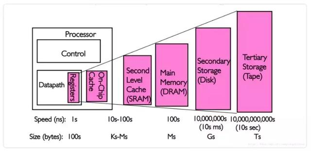

编程语言
通过逻辑门的设计和并实现各类运算指令，这样一个计算机系统就设计完成了。计算机运行时就能通过读取存放在内存中的程序指令，然后执行各种计算和操作。
类似100 000的机器指令对于人类来说很难记住，于是就被编码成人类容易记住的形式，比如load 000，即汇编语言。但汇编语言对人类可能还不够友好，比如下面，
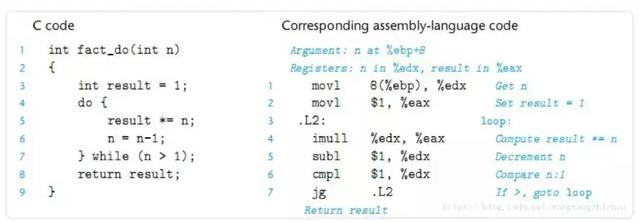
左边的是高级语言C语言，而右边的是汇编语言，可以看到虽然汇编已经比机器语言方便很多了，但是如果比起高级语言，汇编还是太麻烦低效，这也是高级语言诞生的原因。
这样一来引入了高级语言，同时也需要额外的一个编译器将高级语言翻译成汇编语言。那么整个过程就为：高级语言->汇编语言->机器指令->CPU执行。
操作系统
从逻辑门到编程语言的计算机系统干的事都是计算，加减乘除等，假如单单只能用来做计算估计就不会有这么多人沉迷电脑，所以随着计算机的发展它有了屏幕，有了各种音频输入输出，有了键盘鼠标，这样计算机就能做更多事情，比如游戏电影。
给计算机系统增加了这么多设备，要与这些设备交互就需要各种驱动程序，为方便将它们连接起来协同工作，出现了操作系统，通过操作系统能将底层的硬件不同实现屏蔽掉，而且它还提供了很多的系统调用来实现各种功能。
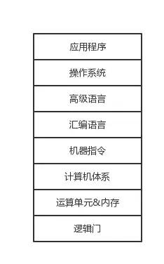